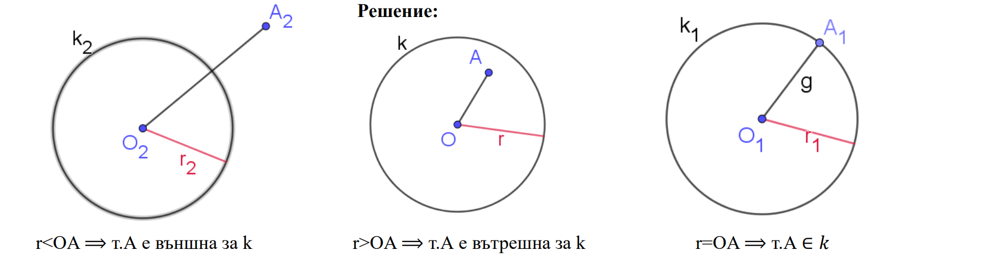
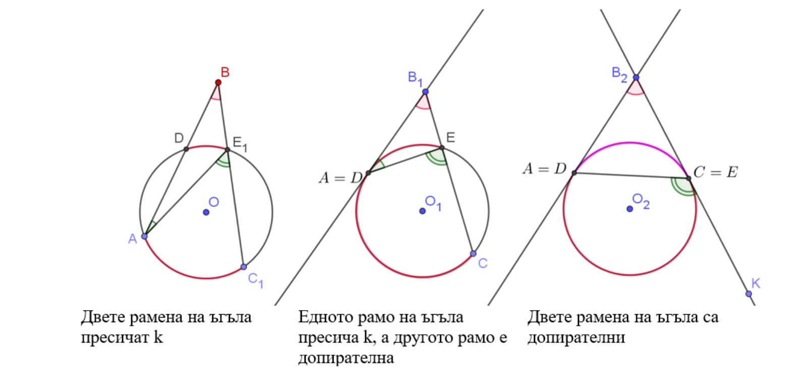

History of Maths
Where did Mathematics come from?
The origins of mathematical thought lie in the concepts of number, patterns in nature, magnitude, and form.
Modern studies of animal cognition have shown that these concepts are not unique to humans.
Such concepts would have been part of everyday life in hunter-gatherer societies.
The idea of the "number" concept evolving gradually over time is supported by the existence of languages which preserve the distinction between "one", "two", and "many", but not of numbers larger than two.
The Ishango bone, found near the headwaters of the Nile river (northeastern Congo), may be more than 20,000 years old and consists of a series of marks carved in three columns running the length of the bone.
Common interpretations are that the Ishango bone shows either a tally of the earliest known demonstration of sequences of prime numbers or a six-month lunar calendar.
Peter Rudman argues that the development of the concept of prime numbers could only have come about after the concept of division, which he dates to after 10,000 BC, with prime numbers probably not being understood until about 500 BC.
He also writes that "no attempt has been made to explain why a tally of something should exhibit multiples of two, prime numbers between 10 and 20, and some numbers that are almost multiples of 10."[15] The Ishango bone, according to scholar Alexander Marshack, may have influenced the later development of mathematics in Egypt as, like some entries on the Ishango bone, Egyptian arithmetic also made use of multiplication by 2; this however, is disputed.
Who was the Creator of Maths?
The study of mathematics as a "demonstrative discipline" began in the 6th century BC with the Pythagoreans, who coined the term "mathematics" from the ancient Greek μάθημα (mathema), meaning "subject of instruction".
Greek mathematics greatly refined the methods (especially through the introduction of deductive reasoning and mathematical rigor in proofs) and expanded the subject matter of mathematics.
Although they made virtually no contributions to theoretical mathematics, the ancient Romans used applied mathematics in surveying, structural engineering, mechanical engineering, bookkeeping, creation of lunar and solar calendars, and even arts and crafts.
Basic Mathematics Formulas
Критерии за взаимното положение на точка и окръжност:
 т. А лежи на k(O;r)⟺ OA=r
 т. А е вътрешна за k(O;r)⟺ OA r
 т. А е външна за k(O;r)⟺ OA>r
Теорема Ъгъл, чийто връх е външен за една окръжност, а раменете му имат общи точки с тази окръжност, се
измерва с полуразликата от дъгите, заключени от раменете му.


Ако D > 0
x1 = (-b + √D)/2.a
x2 = (-b - √D)/2.a
Ако D = 0
ax² + bx + c = a. (x - x1)²
Ако D < 0
Квадратния тричлен не се разлага на множители
Разлагане на множители на квадратния тричлен ax2+bx+c
| –î–∏—Å–∫—Ä–∏–º–∏–Ω–∞–Ω—Ç–∞ ùë´ = ùíɬ≤ ‚àí ùüíùíÇùíÑ |
Разлагане на ax2+bx+c |
| D > 0, т.е. два различни корена x1,2 на квадратното уравнение ax2+bx+c=0 |
ax2+bx+c=a.(x-x1)(x-x2) |
| D = 0, т.е. един двоен корен x1 на квадратното уравнение ax2+bx+c=0 |
ax²+bx+c=a.( x-x1)² |
| D < 0, т.е. квадратното
уравнение ax2+bx+c=0 няма
реални корени |
ax²+bx+c не се разлага на множители |
Factorial (!) usually means something times itself until zero, example: 6! = 6 x 5 x 4 x 3 x 2 x 1